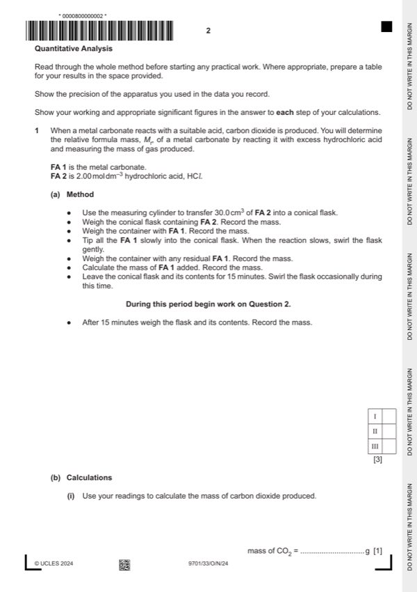
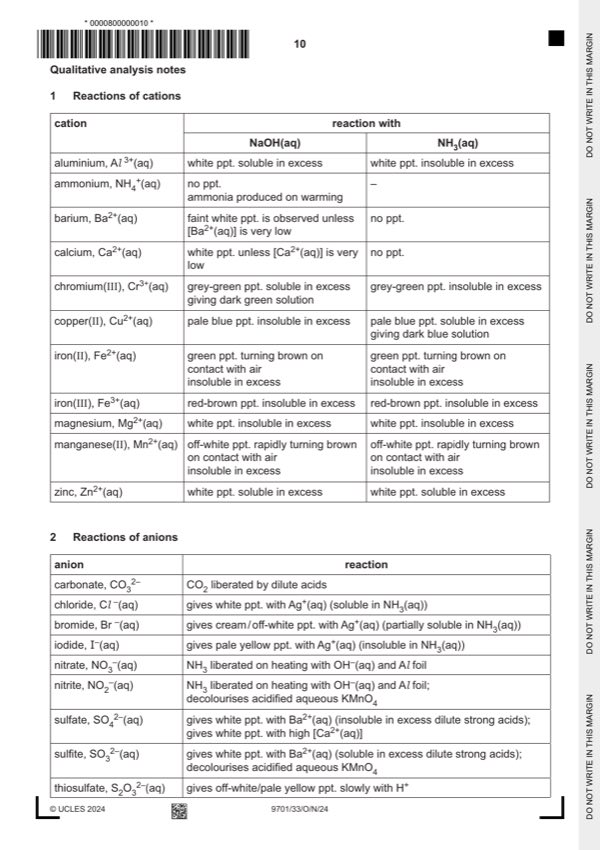

Question 1

Original paper page 2

Original paper page 10
Part 1(a) — solution
- (Mass of conical) flask + FA 2 / g (referred to as x in 1(b)(i))
- (Mass of) container + FA 1 / g
- (Mass of empty) container (or with residual FA 1) / g
- (Mass) FA 1 (added) / g (referred to as y in 1(b)(i))
- (Total mass of conical) flask and contents at end / after 15 mins / after reaction / final / g (referred to as z in 1(b)(i))
Mark points
- (Mass of conical) flask + FA 2 / g (referred to as x in 1(b)(i))
- (Mass of) container + FA 1 / g
- (Mass of empty) container (or with residual FA 1) / g
- (Mass) FA 1 (added) / g (referred to as y in 1(b)(i))
- (Total mass of conical) flask and contents at end / after 15 mins / after reaction / final / g (referred to as z in 1(b)(i))
Part 1(b)(i) — solution
- Correct calculation of mass loss (= mass of CO2) 1
- Mass loss = x + y – z (see 1(a) answer I)
Mark points
- Correct calculation of mass loss (= mass of CO2) 1
- Mass loss = x + y – z (see 1(a) answer I)
Part 1(b)(ii) — solution
- [M1] Correct expression to calculate no of moles of CO2 produced
- [M2] Correct use of data to calculate Mr
Mark points
- [M1] Correct expression to calculate no of moles of CO2 produced
- [M2] Correct use of data to calculate Mr
Part 1(c)(i) — solution
Answer: OR
- [M1] (At lower temp) more CO2 dissolves in the solution 2
- [M2] Lower amount / moles of CO2 (calculated) or
Mark points
- [M1] (At lower temp) more CO2 dissolves in the solution 2
- [M2] Lower amount / moles of CO2 (calculated) or
Part 1(c)(ii) — solution
(Tilting) allows air to replace / displace carbon dioxide in the flask 1
or
(Tilting) tips out the (denser) carbon dioxide gas (from the flask)
or
(Tilting) allows the acid to react with solid stuck to the walls (owtte) of the conical flask.
Mark points
- Include the ideas shown in the solution above.
Part 1(d) — solution
- Uncertainty U (for 2 d.p. balance) = 0.01 or 0.005
- % error in weighing FA 1 = 2 U/mass of FA 1 (used) 100
Mark points
- Uncertainty U (for 2 d.p. balance) = 0.01 or 0.005
- % error in weighing FA 1 = 2 U/mass of FA 1 (used) 100